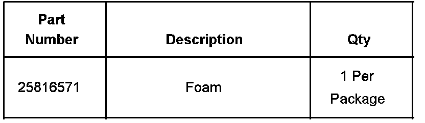
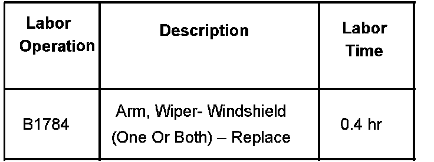

Wipers/Washers - Front Washers Don't Spray Properly
Bulletin No.: 07-08-43-002Date: January 31, 2007
TECHNICAL
Subject:
Windshield Washers Not Spraying Properly (Install Foam Washer)
Models:
2007 Cadillac Escalade, Escalade ESV, Escalade EXT
2007 Chevrolet Avalanche, Suburban, Tahoe
2007 GMC Yukon, Yukon XL, Yukon Denali, Yukon XL Denali
Condition
Some customers may comment that the windshield washers do not spray properly.
Cause
The washer hose may have become damaged under the wiper arm.
Correction
Install a foam shield on the pivot shaft.
Remove the wiper arm finish cap.
Remove the wiper arm nut.
Using the J 39637 - Wiper Arm Removal Tool, remove the arms and lay to the side.
Install the foam shield onto the pivot shaft and tuck it under the cowl inlet panel.
Install the wiper arms.
Tighten
Tighten the nut to 35 N.m (26 lb ft) while holding the wiper arm to the vertical black bar target mark located at the lower portion of the windshield. Install the wiper arm finish caps.

Parts Information
Warranty Information

For vehicles repaired under warranty, use the table.

Disclaimer